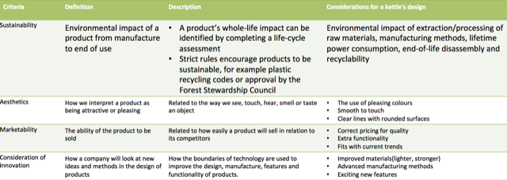

Investigate and analysis the work of professionals and companies to inform design
Table of Contents
1 Analysising a product to specification criteria
You should evaluate all aspects of a product's design to establish:
- key parts
- how they fulfil the design brief and specification
This helps you to understand the design decisions made and why the final product looks, or works, as it does. A good product analysis will examine a product under certain criteria.

Sustainability - meeting the needs of the present without compromising the ability of future generations to meet their needs.
2 The work of past and present designers and companies
Influential designs are adopted and adapted by other designers.
Here are some examples:
Alessi
- Company estabilished in Italy 1921.
- Designer and mass producer of functional but visually appealing homeware and kitchen products.
- Uses famous designers, such as Philip Starck, to create iconic kitchen products, such as the spider-like Juicy Salif lemon squeezer and retro kettles, setting a standard for other homeware companies.
Apple
- Company established in the USA 1976.
- Producer of consumer electronics and software using cutting-edge technologies, e.g. iPad, iWatch, iPod, iPhone, iTunes
- Ground breaking design: products looked compltely different to anything before
- Breaking with tradition and legacy, Apple's iPod made digital music mainstream
- A loyal customer base.
Heatherwick Studio
- Design studio established in the UK 1994.
- Around 200 designers, architects and makers hve worked on projects from perfum bottles to Routemaster buses and Singapore University buildings.
- Stretches the boundaries of materials, craftsmanship and artistic thinking, showing that products and buildings can be unusual, experimental and interesting.
Joe Casely-Hayford
- Fashion designer, born 1956
- Noted for his original but wearable designs that push barriers of conformity, made by master craftspeople using traditional English tailoring methods.
- Sets standard for British tailoring that combines style with character and is popular with celebrities.
Pixar
- Animation studio, established in the USA 1979.
- Among the first to develop computer-animated feature films.
- Uses new techniques and technologies to make popular and successful films including Toy Story and Finding Nemo.
Raymond Loewy
- Industrial designer(1893-1986)
- The father of modern design
- Emphasised the importance of combining simplicity with functionality, working with more than 200 companies on designs ranging from refrigerators to planes, trains and spacecraft
- Introduced the idea that if two products have the same price, function and quality, the products with better aesthetics will be more popular
- His designs are recognisable today, including the Coca-Cola bottle, Le Creuset Coquelle dish and logos for Shell and BP.
Tesla
- Automotive and energy storage company established in the USA 2008.
- Produces electric cars that don't have compromise on power or quality, have zero emissions, are affordable and can be charged at home.
- Leads electric car design technology, including the Tesla Model X (2016)
Zaha Hadid
- Architect (1950-2016)
- Integrated geometric forms with expensive, sweeping fluid forms
- Promoted architecture as a visual art form, with buildings intended to give aesthetic pleasure.
- Overcame racial and gender barriers to establish an architect practise that has designed more than 1000 iconic buildings worldwide.
Apply it
Research other products that have been influenced by Raymond Loewy's steamlined design. Explain how they fit into the 'streamlined' philosophy.
3 Summary
- Products can be evaluated under certain specification criteria
- Many designers have made significant contributions to design and continue to influence today's designers.
4 Exam questions
- Explain why it important that companies design sustainable products.
- Describe two designs philosophies at the core of Zaha Hadid Architect's design style.
- Name the designer whose designs follow the traditions of English tailored clothing but push the barriers of conformity.
- Describe how form could follow function in the design of modern products.
- Investigate the development of an Apple product and identify technological advances that have improved the product over time. Explain why you think Apple is such as influential company.